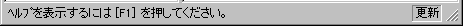

Status Bar


The Status Bar positioned at the bottom of the NIFF Editor window shows how NIFF Editor is being used.

The following items are displayed in the Status Bar:
- Simple menu-specific help is displayed on the left side of the bar.
- The right side of the bar indicates whether the loaded NIFF file has been modified. If the NIFF file has been revised by pasting links or changing flags with NIFF Editor, then "Modified" is displayed at the far right side of the Status Bar. Nothing is displayed in this area when the NIFF file has not been modified, for example right after it has been read into NIFF Editor.
Show/hide the status bar by toggling the "Status bar" command in the View menu.